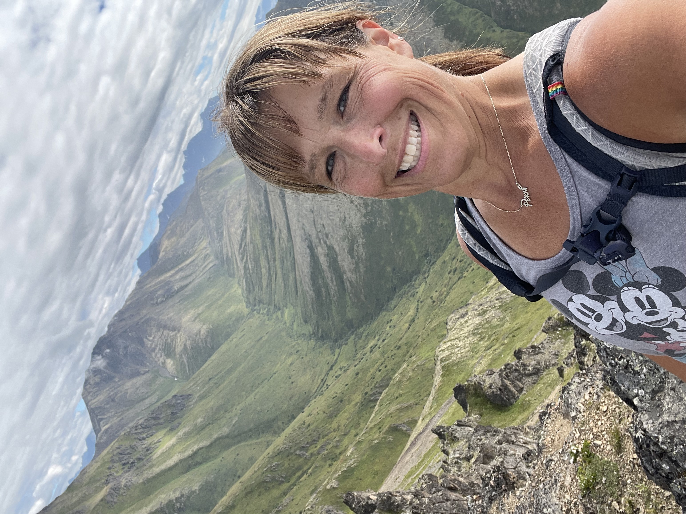
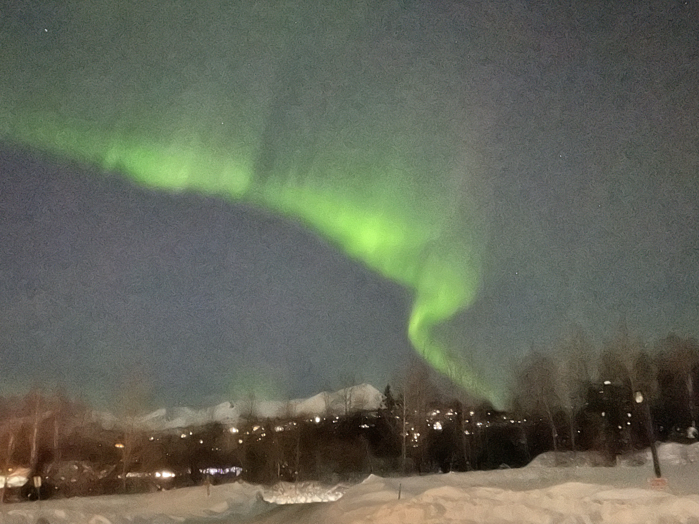
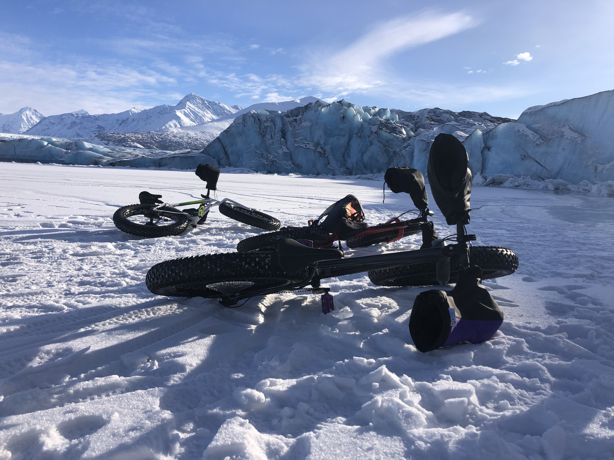

I was born in Anchorage, AK, during its developmental years, something I didn't appreciate at the time but significantly impacted my upbringing. It was a place of wilderness and adventure. My childhood was filled with camping in the summer and skiing in the winter. We enjoyed the sun-filled summers and survived the dark nights. We treasured the moose, northern lights, and mountains. At the same time, I was raised in a supportive community where kids played outside together, and all parents watched to ensure our safety. Due to oil money, opportunities were plentiful with sports, music, and other activities. Yet, we lived in a remote state. It was a 5-hour flight just to get out of the state. Most of us did not have family in Alaska, so friends became family. This is one of the most important things I value in my life today.
As I grew up, I knew I wanted to be a teacher and return to
Alaska to raise my children. I wanted them to live in this land
of opportunity. Yet, I wanted to see what the real
world
was like, and went to college in Iowa. After earning
my degree in Elementary Education, I returned to teach in
Anchorage. The next 28 years of my life were spent teaching
Kindergarten through second grade. Twenty of these years at
Scenic Park Elementary School, where I went to school.
After that many years, I was looking for a change. I wanted to be involved in education but in a different way. I decided to pursue my doctorate in STEM education. My specific focus became mathematics education. My dissertation focuses on the need and type of professional development that would be effective in helping teachers change their mathematical teaching practices. It ignited a new flame to make a difference. I want to help teachers so they, in turn, can help their students to be better mathematicians.
This is the new journey in which I embark…
|  |  |  |